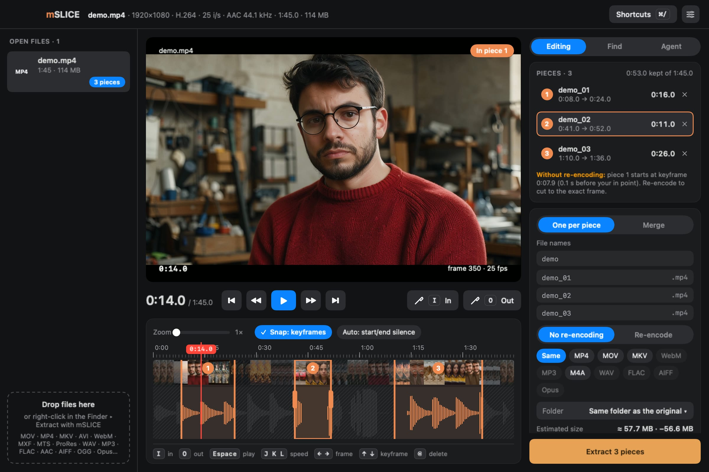

mSLICE · Interface · InterfaceFenêtre · Window
Fenêtre · Window
Une fenêtre, huit zones
One window, eight zones


- Barre du haut : nom du fichier, flux (taille, codec, images par seconde), raccourcis, réglages.
- Fichiers ouverts : un fichier = une session ; le badge compte les morceaux ; glisser-déposer d'autres fichiers.
- Lecteur : image exacte, badge « Dans le morceau N », la tête de lecture suit la souris image par image.
- Commandes : saut, lecture, I entrée et O sortie (crée le morceau).
- Timeline : règle avec images clés, vignettes, forme d'onde, morceaux en orange avec poignées, zoom.
- Panneau de droite : trois onglets, Édition, Trouver, Agent.
- Morceaux : liste numérotée, noms de fichiers, durée gardée ; avertissement de copie directe.
- Export : un fichier par morceau ou fusionné, copie directe ou recompression, format, dossier, taille estimée.
- Top bar: file name, streams (size, codec, frame rate), shortcuts, settings.
- Open files: one file = one session; the badge counts the pieces; drop more files.
- Player: exact frame, “In piece N” badge, the playhead follows the mouse frame by frame.
- Controls: jump, play, I in and O out (creates the piece).
- Timeline: ruler with keyframes, thumbnails, waveform, orange pieces with handles, zoom.
- Right panel: three tabs, Edit, Find, Agent.
- Pieces: numbered list, file names, kept duration; direct-copy warning.
- Export: one file per piece or merged, direct copy or re-encode, format, folder, estimated size.
DESKTOP MAC TOOLKIT · v1.35